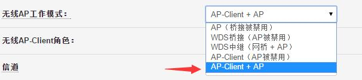
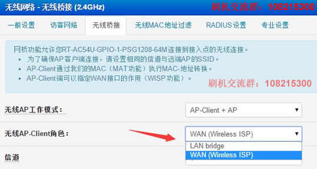
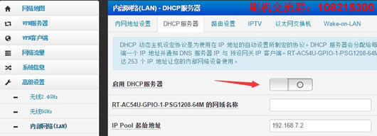
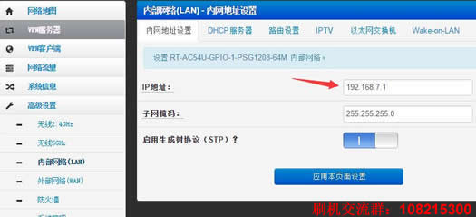
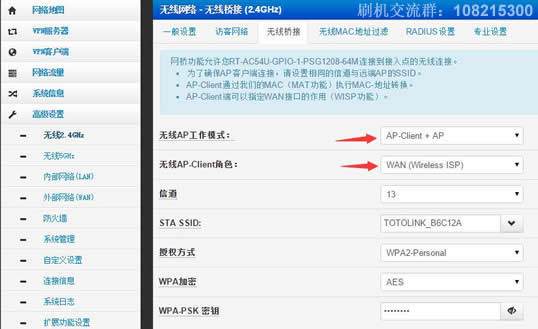

刷华硕固件后的桥接中继教程
发布:站生 | 发布时间: 2016年5月29日1、在高级设置->无线2.4GHz->无线桥接中我们可以看到无线AP工作模式，我们选择AP-Client+AP，如下图。

2、可以看到无线AP-Client角色有：LAN bridge和WAN(Wireless ISP)，这里解释一下这两种角色。

LAN bridge：网桥，简单的说就是承担AP的角色，相当于一个无线交换机了，从主路由获取IP。选择这个就需要关掉华硕的DHCP功能。
Wireless ISP：这个不难理解，就是供应商的形式，副路由在这里就是另外一个网段。选择这个得保证副路由和主路由LAN口地址不在一个网段。
备注：有的网友就问，这两种哪种好？其实都无所谓，如果你经常局域网互传文件，那么就选择LAN bridge，电脑都在一个网段，传输速度快。只不过再次配置副路由的时候需要手动修改本机的IP地址跟副路由一个网段才能登陆路由器，建议家庭用户直接选择Wireless ISP，免去了关闭DHCP的麻烦。
3、第2步理解了就开始设置。
①如果选择LAN bridge，那么就到高级设置->内部网络(LAN)->DHCP服务器：把启用DHCP服务器关掉并应用本页面设置。

②如何选择Wireless ISP，那么就到高级设置->内部网络(LAN)->内网地址设置：把IP地址修改成不与主路由一个网段。

例如改成：192.168.2.1、192.168.3.1均可。
4、信道不用管，STA SSID右侧点下拉箭头就能搜索主路由的信号选择即可，授权方式一般是WPA2，加密AES，再输入主路由密钥应用本页面设置即完成了桥接过程。

- 相关文章:
华硕固件设置宽带拨号上网的方法 (2016-5-29 16:31:7)
潘多拉固件中继教程 (2016-5-29 13:9:49)
潘多拉固件设置单线多播教程 (2016-5-29 13:1:21)
斐讯无线路由器潘多拉固件拨号上网设置教程 (2016-5-29 12:50:40)
斐讯K1K2刷了华硕怎么再刷别的固件 (2016-5-28 19:35:50)
斐讯K2新版本固件4.5.4无损拆机ttl线刷教程 (2016-5-28 17:2:35)
斐讯K1K2刷机常见问题汇总 (2016-5-22 20:5:22)
斐讯K2固件版本4.5.4降级教程 (2016-5-22 19:50:0)
斐讯K1K1SK2路由器刷Breed Web控制台通用小白版 (2016-5-12 16:33:8)
斐讯PSG1218 K2刷潘多拉教程及固件 (2016-5-11 9:46:59)
 4.新叶
4.新叶- 我这边刚刚和你说的反起的，我选Wireless ISP，主路由器必须关闭DHCP功能，且副路由得改IP地址。否则就是无网络，但是只要路由器重启，就得去主路由把DHCP功能打开，应用一次，然后再关闭，应用依次。副路由器才成功上网，请问是哪里没对么？？123 于 2016-11-6 14:48:14 回复这个东西很大程度是要看主路由器的，每个品牌的都不一样，我碰到过好几款tp的要想中继成功次级路由必须关闭DHCP才能上网的！123 于 2016-11-6 14:51:32 回复不同品牌的都不同的，他这个教程貌似只适合k2对k2
- 2016-10-18 21:23:01 回复该留言
- 3.新叶
- 中继成功，选择WAN(Wireless ISP)还是要去主路由器把DHCP功能关闭，副路由器才有网，当路由器断电或者重启后，还得去主路由器把DHCP功能打开应用一次，然后再关闭，应用依次副路由器才有网，请问是什么情况，我是K2,2个路由器都是刷的华硕固件。
- 2016-10-18 21:14:46 回复该留言
- 1.K2
- 按照教程中继成功，只是为什么手机连接5G没网络呢？只能连接2.4G上网？站生 于 2016-9-4 7:00:39 回复有可能手机不支持5G频段，如果不是手机的问题，看一下是否关闭了固件的5G频段。
- 2016-9-3 15:58:36 回复该留言
发表评论
◎欢迎参与讨论，请在这里发表您的看法、交流您的观点。